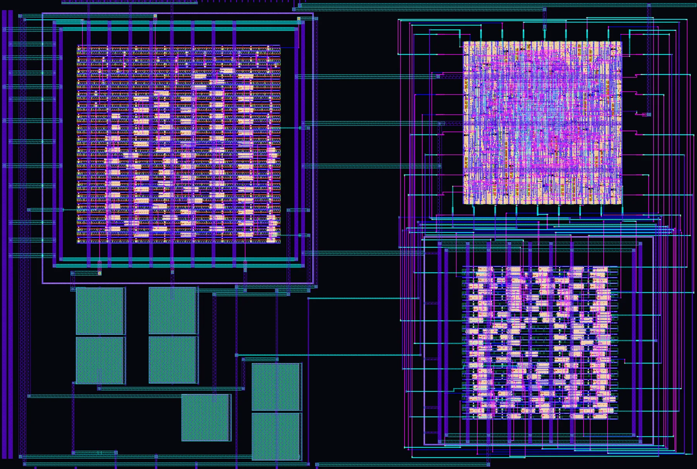
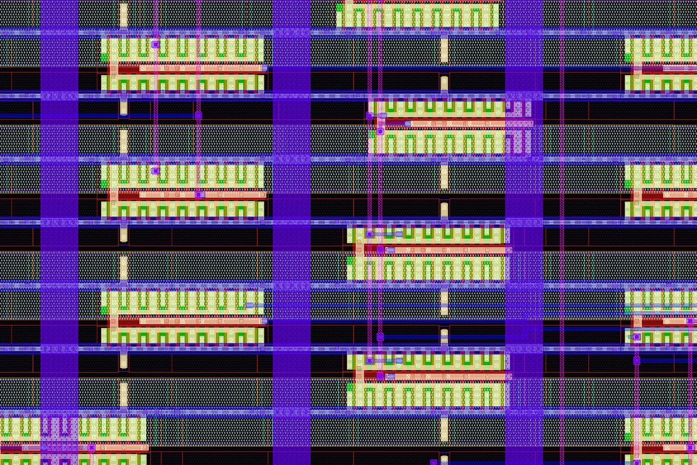

Proyecto de tapeout · Señal mixta
Bio-SSG
Un chip que genera una onda senoidal para aplicaciones biomédicas.

Layout completo · KLayout
334.9 × 225.8 µm · 2×2 tiles
SKY130 · 130 nmAnalógico con celdas estándar1.2 V
El equipo
Quiénes lo llevaron
hasta el silicio
JR
Autor
José Abel
Rodríguez Soto
Rodríguez Soto
ÁS
Autor
Álvaro Gonzalo
Soto Rentería
Soto Rentería
Su diseño fue enviado a fabricación (tapeout) con Tiny Tapeout, en el proceso de 130 nm SKY130 de SkyWater.
UABC · Facultad de Ingeniería Mexicali
¿Qué hace?
Así nace la onda,
mientras bajas
01 · Síntesis digital directa
Un contador de 7 bits recorre una tabla con 128 muestras de una onda seno.
02 · Convertidor digital-analógico
Arreglos de buffers convierten cada número en un nivel de voltaje: aparecen los escalones.
03 · Filtro pasa-bajas de 2.º orden
Inversores polarizados en su región lineal suavizan los escalones.
04 · Amplificadores OTA a 1.2 V
La señal sale en forma diferencial: dos ondas opuestas.
fout = fclk / 128 = 2.56 MHz / 128 = 20 kHz
Anatomía del chip
Un recorrido por
0.076 mm² de silicio
El chip completo
334.9 × 225.8 µm: más o menos el tamaño de un grano de sal.
DDS · lógica digital
Contador de 7 bits + tabla de 128 muestras. 370 celdas estándar.
DAC diferencial
Convierte cada número en voltaje usando sólo buffers e inversores. 144 celdas.
Filtro + OTA
Inversores que trabajan como transconductores, y los amplificadores de salida. 134 celdas.
Capacitores MIM
Los capacitores del filtro, integrados 100 % en el chip.
La idea clave
Analógico, hecho
con piezas digitales

Acercamiento 30 × 20 µm · inversores del filtro (sky130_fd_sc_hd__inv_16)
Normalmente un circuito analógico se dibuja transistor por transistor. Aquí se reutilizaron celdas estándar digitales como bloques analógicos.
0
celdas estándar
0
capacitores MIM
0
capacitores externos
Ficha técnica
Bio-SSG en datos
| Proceso | SkyWater SKY130 · 130 nm |
| Programa | Tiny Tapeout · shuttle TTSKY26a |
| Área | 334.9 × 225.8 µm · 2×2 tiles (≈ 0.076 mm²) |
| Reloj | 2.56 MHz · contador de 7 bits · LUT de 128 muestras |
| Salida | Senoidal diferencial · 20 kHz nominal · ua[5], ua[4] |
| Voltajes | 1.2 V analógico · 0.65 V DAC · 0.6 V referencia |
| Celdas | 648 sky130_fd_sc_hd + 4 capacitores MIM |
También en Instagram
Las 6 diapositivas
Mismo contenido en formato carrusel. Toca una para abrirla completa.
Siguiente: STDCELL_LDO →